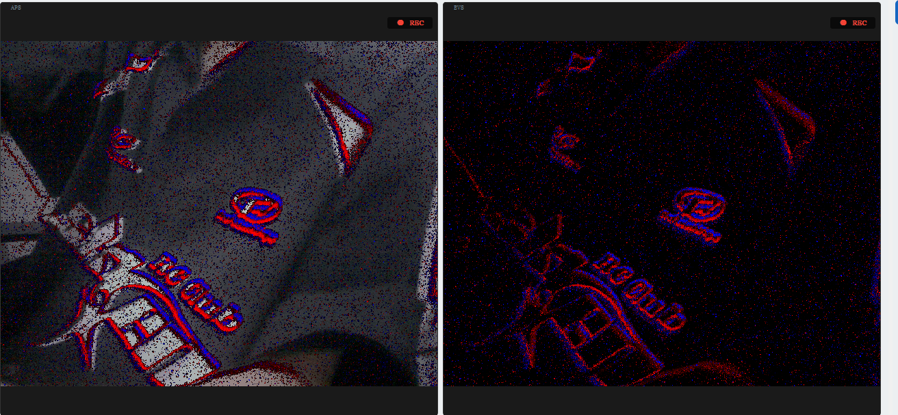
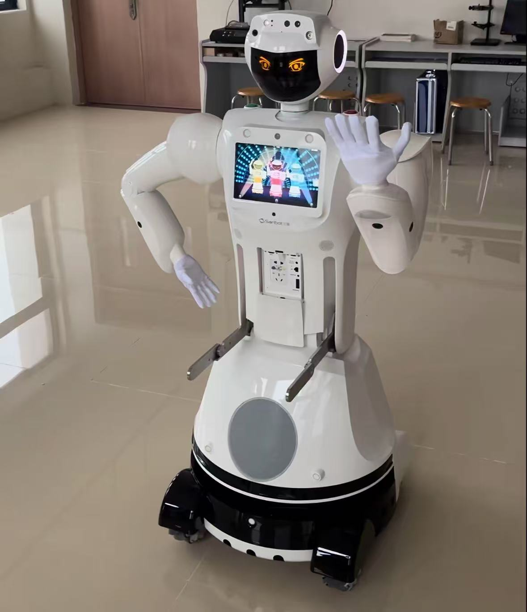
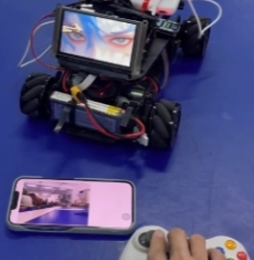
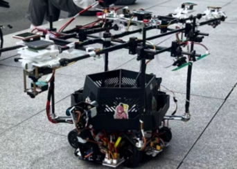

📁 芯片底层与操作系统驱动

基于RK3588的RGB、EVS、TOF多模相机与智能网关系统
结合帧视觉与类脑视觉互补优势的边缘计算视觉感知系统
uboot裁剪V4L2ISP PipelineQT上位机
点胶机器人视觉检测与双目对针系统
面向点胶机器人的全栈视觉系统，覆盖驱动、算法与标定
全志Cortex-ASGBMQtPoE相机📁 计算机视觉与图像信号处理

基于RK3588的自行瞄准机器人
运动底盘+二维云台+边缘视觉，高速运动下精准锁定
V4L2Canny逆透视变换RGA加速
基于YOLOV5与STM32的激光追踪云台系统
RK3588+STM32双级异构，深度学习+经典图像处理闭环追踪
YOLOv5INT8量化卡尔曼滤波逆透视变换📁 边缘端AI与模型部署

基于Sanbot平台的智能服务机器人应用与视觉导航系统
3D SLAM建图、多源传感器融合避障、YOLO+NVIDIA Xavier全栈控制
ROSYOLOOpenVINO INT83D定位
基于RK3588的边缘计算图传移动机器人控制系统
Linux视觉计算节点+FreeRTOS MCU，Web服务器+NPU推理+DMA通信
FlaskMJPEGNPU推理FreeRTOS
基于STM32H7的嵌入式边缘计算纽扣缺陷检测与自动分拣系统
STM32H7+轻量化深度学习，传送带实时缺陷识别与精密分拣
STM32CubeAIINT8量化DMA驱动RTOS📁 机器人控制

基于RT-Thread的智能视觉搬运机器人
NXP Cortex-M7+RT-Thread，硬件感知-异构通信-多传感器协同全链路
RT-ThreadMT9V034状态机容错恢复
基于STM32的蓝牙平衡小车
MPU6050+互补滤波/卡尔曼滤波姿态解算，串级PID，手机蓝牙遥控
PID控制卡尔曼滤波HC-05MPU6050📁 应用层开发与跨平台上位机

基于Qt的泰克示波器智能协议分析上位机
LAN通信+SCPI指令集，SPI/I2C协议解析，大津法自适应阈值波形转换
QtSCPISPI/I2C大津法
基于Qt的原创BLE蓝牙上位机
PyQt5多进程并行架构，BLE全生命周期管理，全双工异步通信
PyQt5BLE多进程异步通信📁 系统架构、并发与网络传输

基于BLE协议栈与Find My网络的低功耗智能定位系统
BLE协议栈深度定制+苹果Find My协议兼容，无需GPS实现全球盲区追踪
BLE协议栈Find My微信小程序低功耗